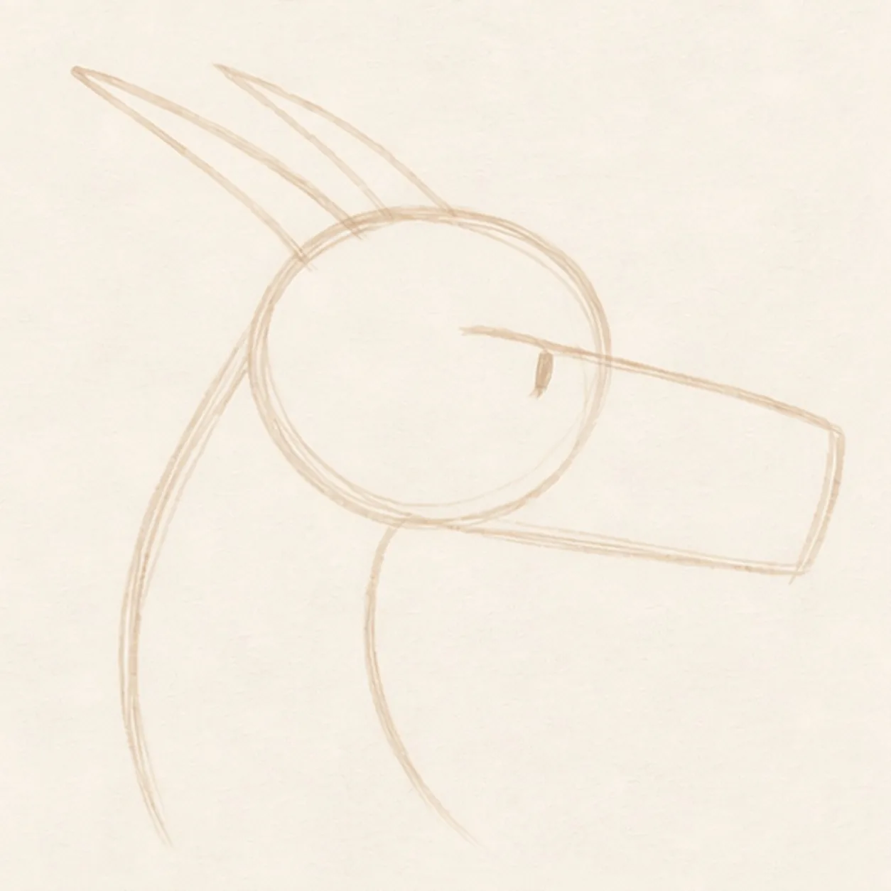
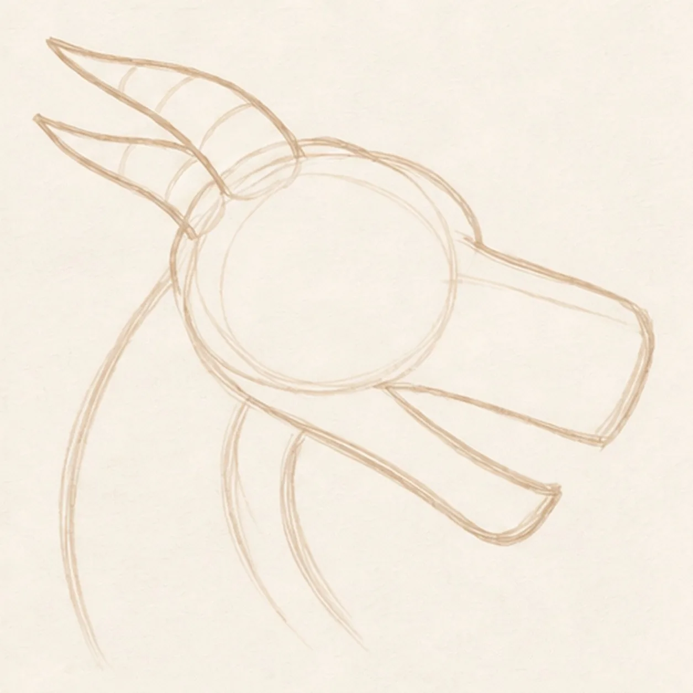
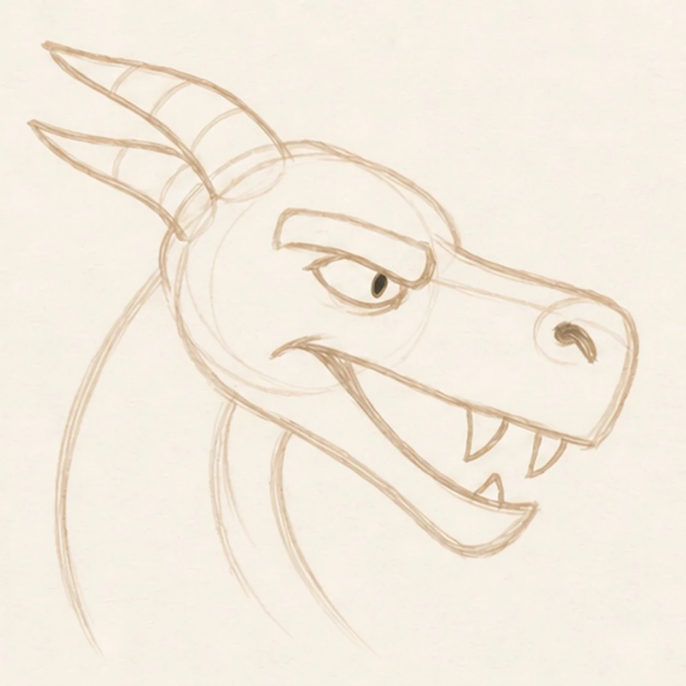
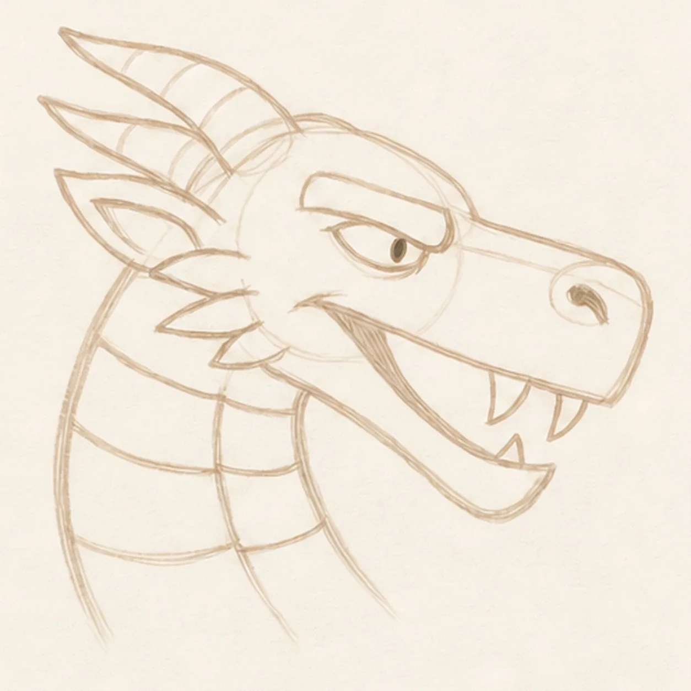
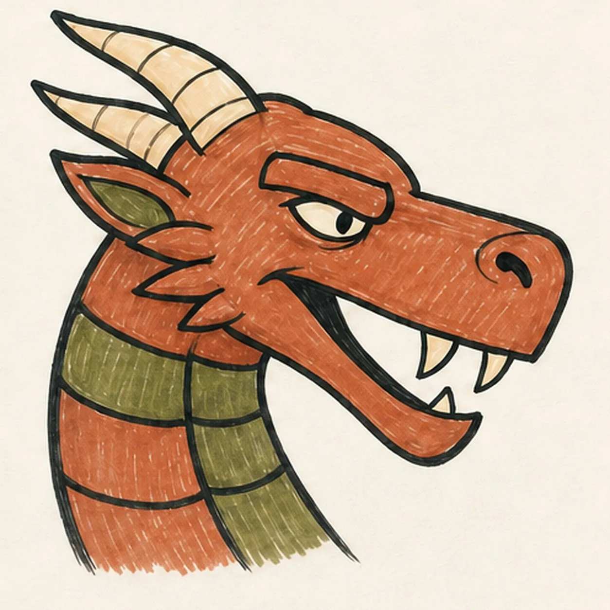

Felt-tip marker mode
Let's draw a cartoon dragon head
Treat this as one playful practice round: sketch the idea loosely, simplify the shapes, then commit with confident marker outlines and bright fills.
-
01

Map the dragon profile
Place one pale head oval, a long right-facing muzzle wedge, a curved neck sweep, an eye line, and exactly two swept-back horn axes.
Marker tip: Ghost the muzzle edge and neck curve before touching down. Compare the open wedge between the horn axes and keep both horn-base footprints free of skull detail that would later be covered.
-
02

Build the horned silhouette
Wrap the guides with the outer head, muzzle, open lower jaw, curved neck, and exactly two complete horn contours in the same profile.
Marker tip: Rotate the page for the long jaw edge and pull it in one confident pass. Stop hidden skull lines at the horn bases instead of drawing through them.
-
03

Aim the sly dragon expression
Add one narrow almond eye and forward pupil under a heavy slanted brow, one flared nostril, and an asymmetrical open side grin with exactly three fangs.
Marker tip: Tilt the brow against the eye rather than mirroring it, then leave uneven mouth corners. That combination of eye, brow, nostril, and three-fang grin creates a sly expression without dot eyes or a U-smile.
-
04

Add spikes and neck armor
Add one pointed ear behind the jaw hinge, exactly three cheek spikes, exactly four broad neck plates, and one simple tongue-free inner-mouth shape.
Marker tip: Mark all three spike tips and four plate breaks lightly before inking. Compare their negative spaces so the repeating shapes feel lively rather than mechanically even.
-
05

Ink the earthy dragon colors
Thicken every established keeper line, fill the skin terracotta, the four plates and inner ear moss green, both horns and all three fangs warm cream, and the eye and mouth black.
Marker tip: Pull terracotta strokes along the muzzle and neck curves, then let them dry before reinforcing black edges. Leave small paper gaps in the fills instead of adding glossy white highlights later.
-
06

Wake up the dragon finish
Strengthen the keeper outlines and clarify the established two horns, sly eye and brow, nostril, three-fang grin, ear, three cheek spikes, four neck plates, earthy fills, and marker streaks.
Marker tip: Count two horns, three fangs, three cheek spikes, and four plates, then stop. You can change the earthy colors or spike sizes in your own version, but wings, flames, a full body, a sticker edge, or a badge frame would make a different lesson.
![Handmade face-free felt-tip marker drawing of one thick forest-green garden hose forming one loose lower-left loop with a single over-under crossing, connected to one burnt-orange pistol-grip spray nozzle angled toward the upper right with one open-paper barrel collar, one cream trigger, one cream connector, exactly three black handle grip ribs, exactly three curved muted-blue water jets, exactly two detached blue drops, one open-paper highlight on the hose and one on the handle, thick imperfect black outlines, visible marker streaks, and one short flat irregular deep-navy ground-shadow patch](../assets/garden-hose-with-spray-nozzle-finished-v1.webp)
![Handmade face-free felt-tip marker drawing of one plump raspberry-and-coral heart tilted slightly clockwise with one teal adhesive bandage crossing diagonally from lower left to upper right, one warm-yellow center pad, two rounded adhesive ends with exactly four open-paper ventilation dots total, two open-paper oval heart highlights, exactly two small warm-yellow sparkle accents, thick imperfect black outlines, visible marker streaks, a few pale construction traces, and one broken deep-navy shadow](../assets/heart-with-a-bandage-finished-v1.webp)
![Handmade face-free felt-tip marker drawing of one open book in a shallow three-quarter view with exactly two blank page blocks, one black V-shaped center gutter, one coral ribbon bookmark hanging from the gutter, one small curled outer corner on each page, exactly three stacked warm-yellow lower page-edge bands per side, raspberry marker fill across the left page and cover plane, teal marker fill across the right page and cover plane, small open-paper cover-edge highlights, thick imperfect black outlines, visible marker streaks, restrained edge hatching, and one broken deep-navy shadow](../assets/open-book-with-ribbon-bookmark-finished-v1.webp)